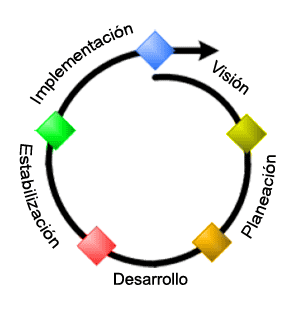
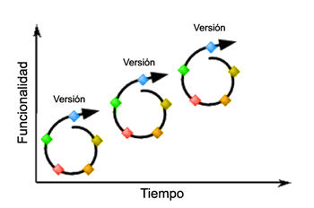
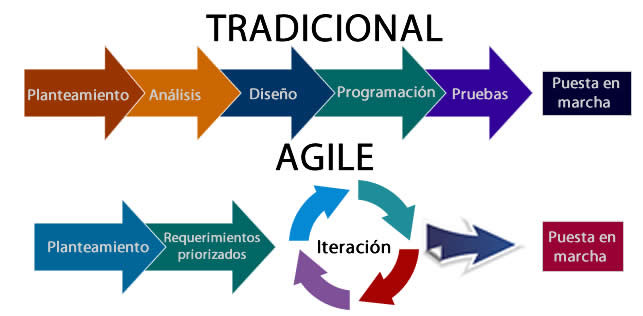
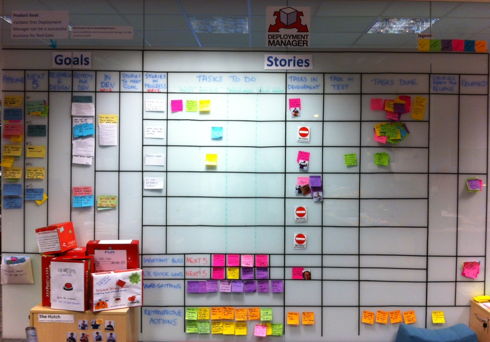
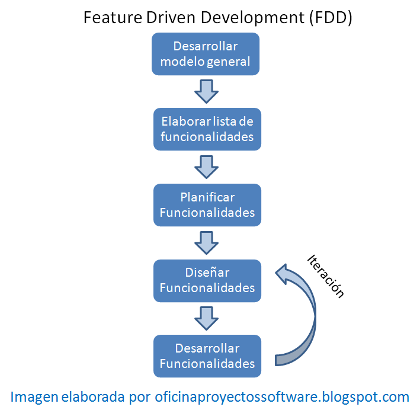

Universidad Nacional Experimental Del Táchira
Decanato De Docencia
Dpto. Ingeniería Informática
Seminario
Código 0424902T
Objetivo de la clase
- Repasar el proceso de desarrollo de software.
- Comprender la importancia de la Ingeniería de Software.
- Conocer alguna de las metodologías ágiles de desarrollo mas utilizadas.
Ingeniería de Software
Desarrollemos un concepto
¿Diferencias con
Ingeniería de Computación?
¿?
Ing. Computación
Se enfoca en las bases de la computación como:
- Algoritmos
- Lenguajes de programación
- Teoríás de computación
- Inteligencia artificial
- Diseño de hardware
Ing. Informática y de Software
- Se enfoca en el apoyo tecnológico y gerencial para sistemas grandes y complejos.
- Su tarea es mejorar los principios de ingeniería que soportan el ciclo de vida de las tecnologías de una organización.
- Se enfoca en resolver problemas del mundo real aplicando su juicio profesional, el cual es adquirido con la experiencia, entrenamientos.
Conceptos de Ingeniería de Software
"Ingeniería de software es la aplicación práctica del conocimiento científico al diseño y construcción de programas de computadora y a la documentación asociada requerida para desarrollar, operar y mantenerlos. Se conoce también como desarrollo de software o producción de software."
Barry Bohem (1976)
Conceptos de Ingeniería de Software
"...El establecimiento y uso de los principios de ingeniería para economicamente obtener software que es confiable y trabaja eficientemente en máquinas reales."
IEEE Standard Glossary of Software Engineering Terminology (1990)
¿Por qué aplicar
Ing. Software?
¿Por qué aplicar
Ing. Software?
-
Mejor calidad de software:
- Mejor mantenimiento.
- Reutilización de código.
- Garantía de cumplir con los requerimientos.
- Reducción de tiempo de desarrollo y costos.
- Aprovechamiento eficiente de los recursos.
Ciclo de desarrollo de software

Fuente: SITCOM Soluciones
Metodologías de
desarrollo de software
Es una parte del desarrollo de software, el cual consiste en la estructuración, planificación y control del proceso de desarrollo de sistemas.
Entre los modelos mas conocidos están: Cascada, Prototipos, Espiral, Incremental, RAD.
Metodologías ágiles
- Estan basadas en el desarrollo iterativo e incremental.
- La comunicación se hace en "persona" en vez de medios escritos.
- Se desarrolla en unidades de tiempo llamadas iteraciones.
Metodologías ágiles

Proceso de una iteración

Iteraciones a lo largo del tiempo
Metodologías
tradicionales vs ágiles

Metodologías
tradicionales vs ágiles
| Tradicionales | Ágiles |
|---|---|
| Planes rígidos | Flexible ante cambios |
| Negociación contractual | Colaboración con el cliente |
| Se valoran los procesos | Se valoran las personas |
| Dependencia en modelos | Poca dependencia en la arq. de software |
Métodologias ágiles
- Scrum
- XP
- TDD
- FDD
SCRUM
- Diseñada para afrontar cambios en los requerimientos por parte del cliente.
- Asume los problemas no pueden ser totalmente comprendidos o definidos, por eso hace entregas rápidas para responder a los requerimientos.
- Es una de las metodologías mas utilizadas en el ámbito empresarial.
SCRUM
Roles
- Product owner: representa al cliente, se encarga de escribir las historias de usuario, anuncia lanzamientos, comunica el estado del proyecto, organiza las prioridades, entre otros.
- Developer Team es el equipo que ejecuta las fases de desarrollo del software.
- Scrum Master se encarga de hacer cumplir la metodología, organiza las reuniones, no sustituye al project manager porque el equipo de desarrollo es auto-organizable.
Eventos de SCRUM
Sprint (Iteración)
- Es la unidad mínima de desarrollo, posee un tiempo fijo de duración.
- Todos los sprints son definidos al principio del proyecto.
- Al final de un sprint, el software debe estar potencialmente listo y haber pasado por todas las etapa de desarrollo.
Eventos de SCRUM
Reuniones
-
Existen reuniones diarias para responder:
- ¿Qué has hecho desde ayer?
- ¿Qué es lo que harás hasta la reunión de mañana?
- ¿Has tenido algún problema que te haya impedido alcanzar tu objetivo?
- Se hacen reuniones antes y después del Sprint, la primera para planificación y la otra para revisión.
Herramientas de SCRUM
Product Backlog
Herramientas de SCRUM
Sprint Backlog

SCRUM

Resumen del proceso de desarrollo con SCRUM
XP Extreme Programming
- Es una disciplina que organiza a las personas para producir eficientemente software de alta calidad .
- Prefiere código de calidad por encima de documentación de calidad.
- Se apoya en una serie de valores: comunicación, simplicidad, retroalimentación, valentía, respeto.
- Se apoya en 4 actividades estructurales: planeación, diseño, codificación, pruebas.
XP Extreme Programming
Actividades de la XP
- Planeación: proceso donde los programadores "escuchan" a los clientes para comprender la lógica del negocio.
- Diseño: debe ser sencillo, sistemático (donde los cambios en partes no afecten a la totalidad), al volverse complejo se debe crear un prototipo y realizar rediseños sobre este.
XP Extreme Programming
Actividades de la XP
- Codificación: se suele utilizar TDD, estándares que permitan hacer que el código luzca realizado por una persona, sirve como medio de comunicación entre programadores.
- Pruebas: se apoya bastante en pruebas unitarias, permiten limpiar el código de errores, se realizan pruebas de aceptación para verificar que se cumplen los requisitos del cliente.
XP Extreme Programming

Actividades de la XP
Feature Driven Development (FDD)
- Creada en 1997 por Jeff De Luca basada en procesos iterativos.
-
Esta compuesta por 5 fases:
- Las primeras 2 se encargan de dar forma a las actividades y el prototipo inicial.
- Las 3 finales son iteraciones que se repiten por cada funcionalidad
Fases de FDD
- Desarrollar un modelo general.
- Construir una lista de características/funcionalidades.
- Planificar por característica.
- Diseñar y construir por característica.
- Repetir el paso 4 hasta no existir mas características.
Fases de FDD
Test Driven Development (TDD)
- Metodología basada en cortos procesos iterativos.
- El programador escribe primero la prueba (que falla inicialmente) de una funcionalidad a crear, crea el mínimo código para pasar esa prueba y luego mejora el código a un estándar aceptable.
Ciclo de TDD
- Añadir una prueba.
- Ejecutar todas las pruebas y ver si alguna falla.
- Escribir código que permita pasar la prueba.
- Ejecutar pruebas.
- Optimizar el código.